Un créateur YouTube reçoit des centaines de commentaires. Les lire à la main prend trop de temps et reste subjectif.
Solution : une extension Chrome qui lit les commentaires d'une vidéo, les envoie à une API dans le cloud, et affiche le sentiment de chacun (positif, neutre, négatif) avec des statistiques.
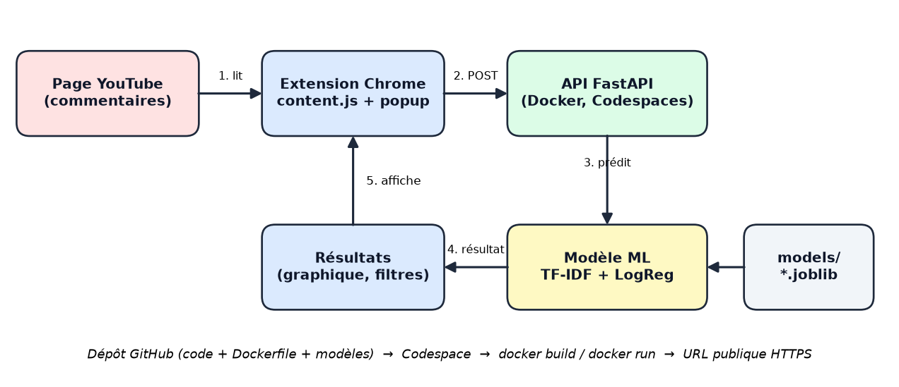
| Composant | Technologie |
|---|---|
| Frontend | Extension Chrome (JavaScript, HTML, CSS), Manifest V3 |
| Backend | API REST FastAPI (endpoints /health et /predict_batch) |
| Modèle ML | scikit-learn : TF-IDF + Logistic Regression |
| Déploiement | Docker, exécuté dans GitHub Codespaces (URL publique HTTPS) |
| Versioning | Git + GitHub |
Flux : (1) l'utilisateur ouvre une vidéo, (2) l'extension lit les commentaires, (3) elle les envoie en un seul batch à l'API, (4) l'API les traite avec le modèle, (5) elle renvoie les sentiments, (6) l'extension affiche les résultats.
Structure du projet (MLOps) :
data/ (raw, processed) models/ (model.joblib, vectorizer.joblib) src/ (data, models, api, utils) chrome-extension/ logs/ tests/ Dockerfile requirements.txt requirements-prod.txt .gitignore README.md
Étapes : dossiers créés, git init, environnement virtuel venv (Python 3.12), dépendances dans requirements.txt, .gitignore (venv, .env, logs, données).
Dataset : Reddit Sentiment Analysis (commentaires étiquetés -1 négatif, 0 neutre, 1 positif), téléchargé par script dans data/raw/reddit.csv.
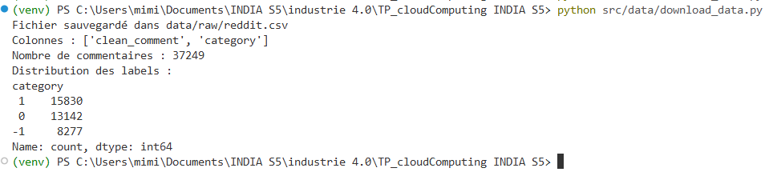
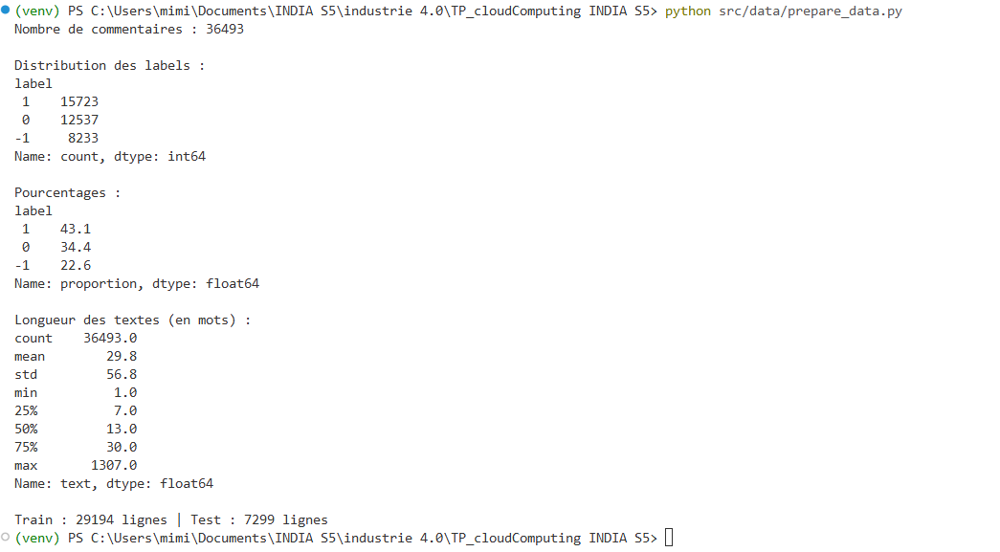
Nettoyage (prepare_data.py) : minuscules, suppression des liens, des mentions @ et des caractères spéciaux, suppression des lignes vides et des doublons.
Avant : "Check THIS out!!! https://youtu.be/xyz @john 😍" Après : "check this out"
| Étape | Nombre de commentaires |
|---|---|
| Dataset brut | 37 249 |
| Après nettoyage (doublons et textes vides supprimés) | 36 493 |
| Train (80 %) | 29 194 |
| Test (20 %) | 7 299 |
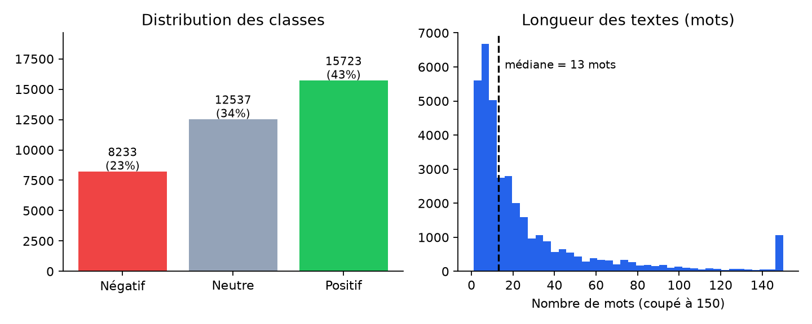
Chaque classe dépasse largement le minimum demandé (300). Les classes sont déséquilibrées (négatif 22,6 % seulement) : on compense avec class_weight="balanced" à l'entraînement. Le split est reproductible (random_state=42) et stratifié (mêmes proportions dans train et test : 43,1 / 34,4 / 22,6 %).
Vectoriseur TF-IDF : 30 000 variables maximum, mots seuls et paires de mots (ngram_range=(1,2)), min_df=2, max_df=0.9, sublinear_tf=True. Il est entraîné sur le train seulement.
| Algorithme | Accuracy | F1 macro |
|---|---|---|
| Logistic Regression (C=1) | 85,3 % | 0,843 |
| Linear SVM | 88,3 % | 0,872 |
| Random Forest | 79,0 % | 0,758 |
| Logistic Regression optimisée (C=20, GridSearchCV, 3 plis) | 88,1 % | 0,871 |
Le SVM est très proche, mais on garde la Logistic Regression, demandée par le sujet. L'optimisation de C a fait passer l'accuracy de 85,3 % à 88,1 %.
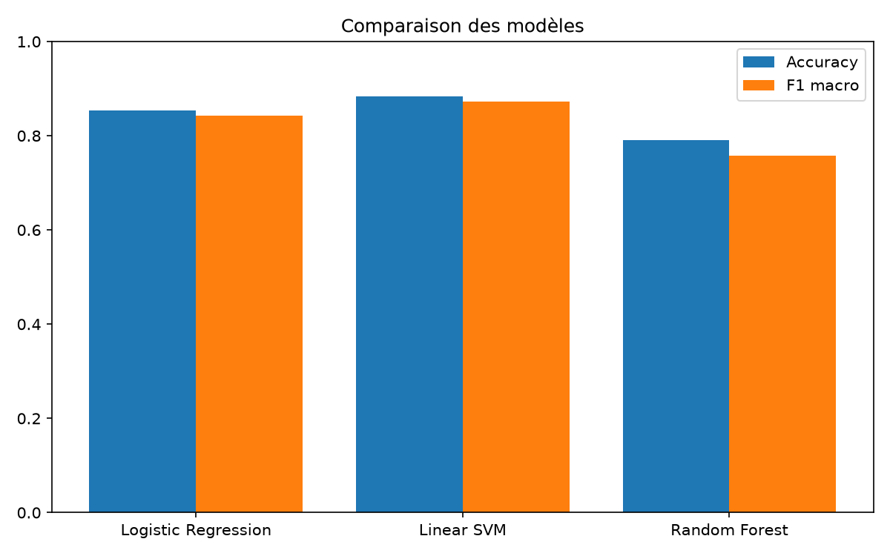
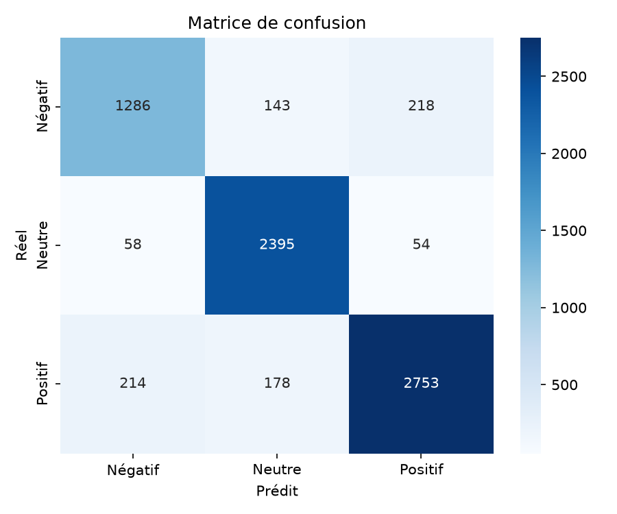
| Critère du sujet | Résultat | Validé |
|---|---|---|
| Accuracy ≥ 80 % | 88,1 % | ✔ |
| F1 négatif > 0,75 | 0,80 (précision 0,83 ; rappel 0,78) | ✔ |
| F1 neutre > 0,75 | 0,92 (précision 0,88 ; rappel 0,96) | ✔ |
| F1 positif > 0,75 | 0,89 (précision 0,91 ; rappel 0,88) | ✔ |
| Inférence < 100 ms pour 50 commentaires | 2,8 ms | ✔ |
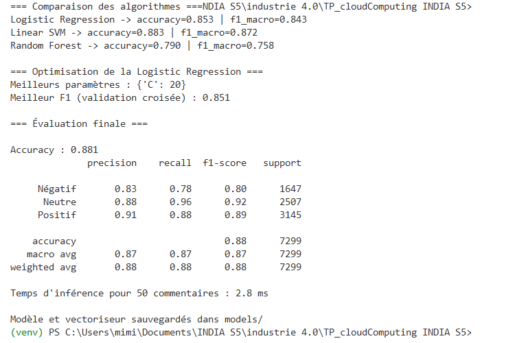
| Endpoint | Méthode | Rôle |
|---|---|---|
| /health | GET | Vérifie que l'API tourne et que le modèle est chargé |
| /predict_batch | POST | Reçoit une liste de commentaires, renvoie le sentiment, la confiance de chacun et des statistiques |
Structure modulaire : src/api/main.py (routes), schemas.py (validation Pydantic), src/utils/text_cleaning.py (même nettoyage qu'à l'entraînement). Le modèle est chargé une seule fois au démarrage. CORS activé. Les erreurs de données renvoient le code 422.
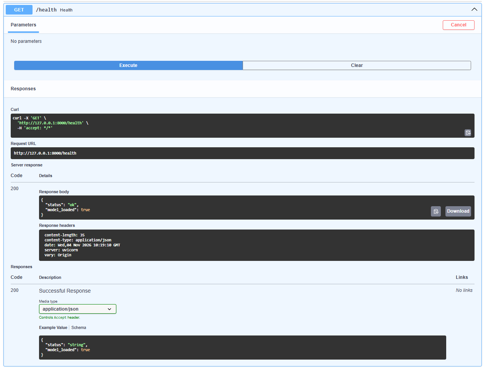
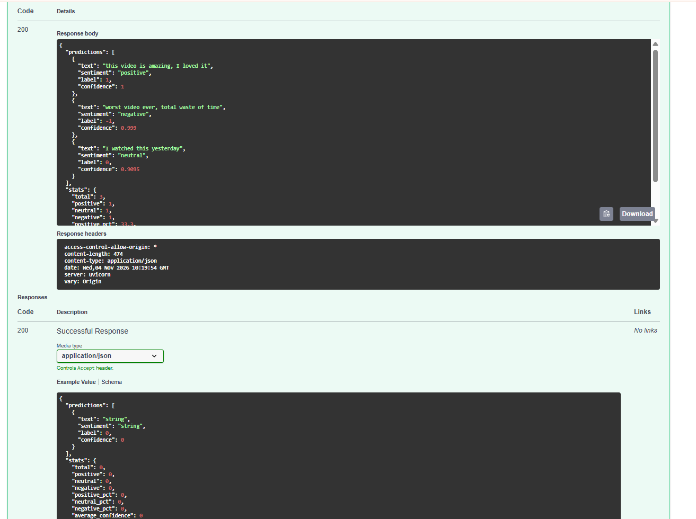
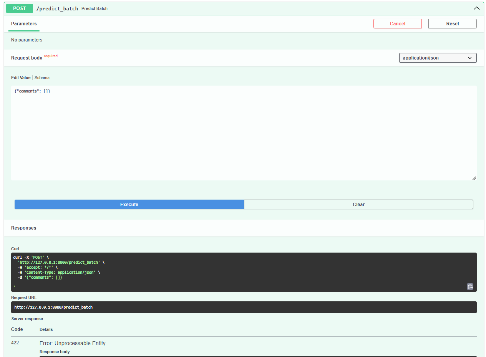
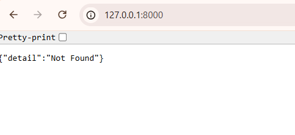
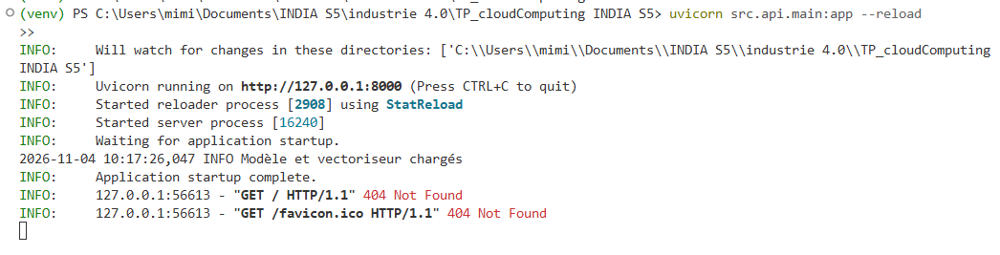
Fichiers : manifest.json (Manifest V3, permission « storage » seulement), content.js (lit les commentaires dans la page), popup.html / popup.css / popup.js (interface et appels à l'API).
Fonctions : extraction automatique des commentaires, statistiques globales (anneau + %), liste avec sentiment et confiance, filtres, mode sombre/clair mémorisé, copier, exporter en CSV, messages de chargement et d'erreur.
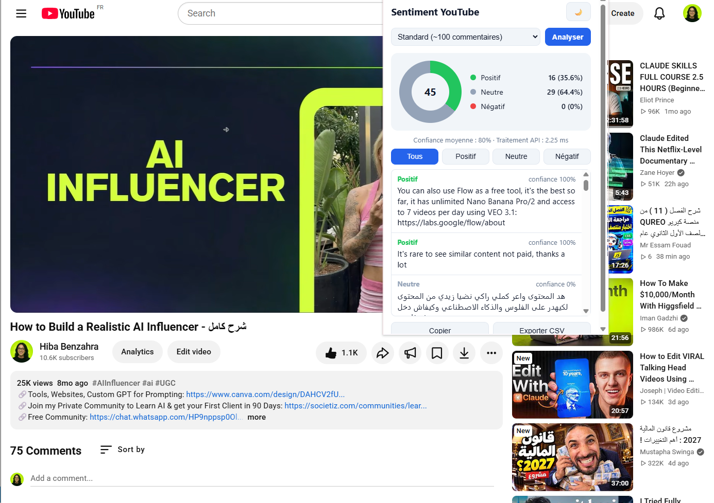
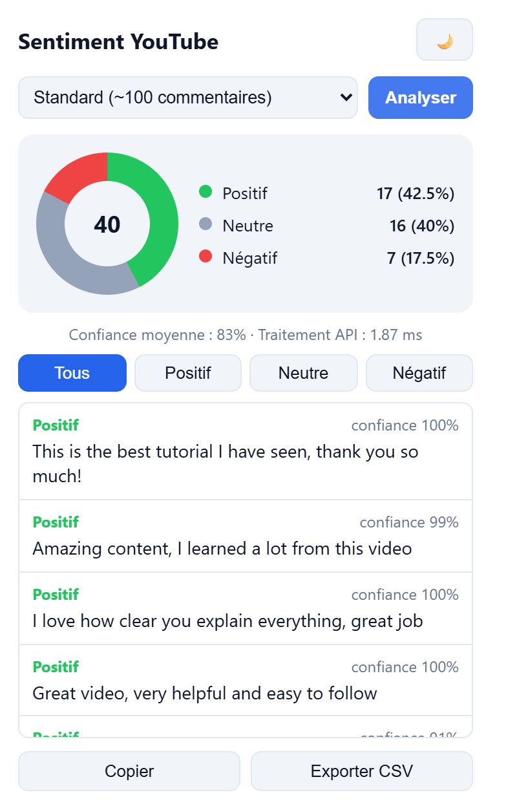
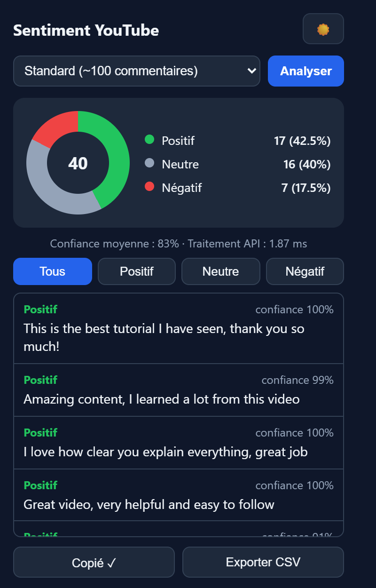
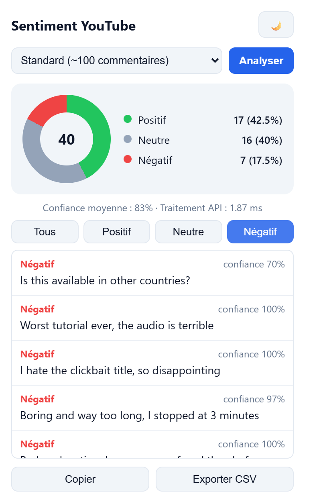
Fichiers : app_api.py (point d'entrée), Dockerfile, requirements-prod.txt (6 paquets seulement, versions fixées), .dockerignore.
Bonnes pratiques utilisées : image légère python:3.12-slim, utilisateur non administrateur, installation des dépendances avant la copie du code (cache des layers), copie du strict nécessaire (api, utils, 2 fichiers .joblib), port 7860 configurable avec la variable PORT.
docker build -t youtube-sentiment-api . docker run -d -p 7860:7860 youtube-sentiment-api
Étapes : push sur GitHub, ouverture d'un Codespace, build de l'image, lancement du conteneur, port 7860 mis en « Public ». URL de l'API : https://organic-space-carnival-x594x6jg76vpf6p5p-7860.app.github.dev
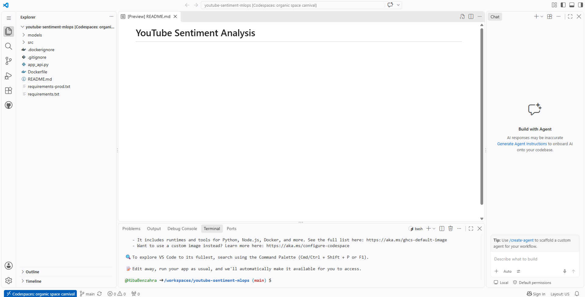
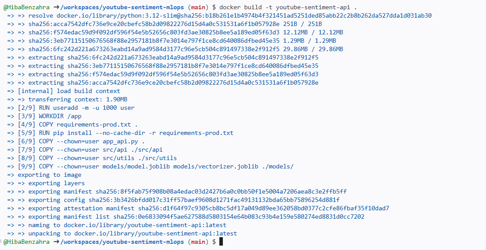
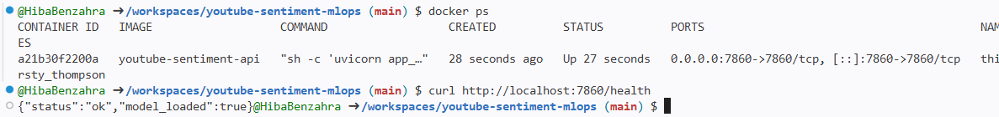
Résumé : 23 tests automatiques réussis (pytest), 7 tests d'erreurs API réussis en local et en cloud, 21 tests d'extension réussis, et 200 prédictions identiques entre l'API locale et l'API déployée.
| Test | Résultat | Validé |
|---|---|---|
| Accuracy sur le test set | 88,1 % (≥ 80 %) | ✔ |
| F1 par classe | minimum 0,80 (> 0,75) | ✔ |
| Temps d'inférence, 50 commentaires | 2,8 ms (< 100 ms) | ✔ |
| 9 cas limites (très court, très long, emojis, langues mélangées, arabe, ponctuation, espaces) | Aucun plantage, réponse toujours -1, 0 ou 1 | ✔ |
| Phrase clairement positive / négative | Bien classées | ✔ |
| Cas | Sentiment | Confiance |
|---|---|---|
| Texte très court | neutral | 99 % |
| Une seule lettre | neutral | 99 % |
| Texte très long (2000 mots) | neutral | 89 % |
| Seulement des emojis | neutral | 0 % |
| Texte + emoji | positive | 100 % |
| Français + anglais | positive | 99 % |
| Arabe | neutral | 0 % |
| Ponctuation seule | neutral | 0 % |
| Espaces seulement | neutral | 0 % |
| Lien + mention | positive | 99 % |
À noter : les textes sans lettres latines (emojis seuls, arabe, ponctuation) deviennent vides après nettoyage. L'API les classe « neutre » avec une confiance de 0 %. C'est une limite connue (voir section 10).
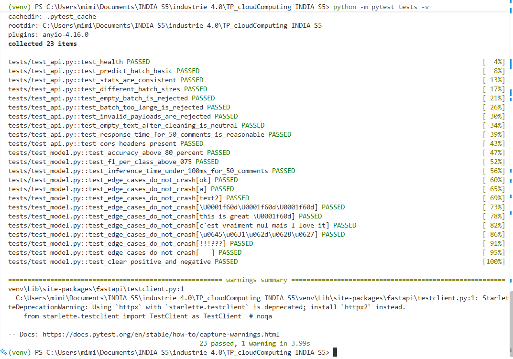
| Taille du batch | Traitement API (local) | Total (local) | Traitement API (cloud) | Total (cloud) |
|---|---|---|---|---|
| 1 | 3.14 ms | 19.3 ms | 1.22 ms | 759.5 ms |
| 10 | 2.38 ms | 21.4 ms | 1.38 ms | 701.8 ms |
| 50 | 6.38 ms | 12.6 ms | 4.71 ms | 596.9 ms |
| 200 | 12.1 ms | 25.7 ms | 14.43 ms | 650.5 ms |
| 1000 | 36.15 ms | 57.7 ms | 83.01 ms | 1247.2 ms |
Le « total » du cloud inclut le réseau (environ 0,6 s). Le traitement par le modèle reste très rapide, même pour 1000 commentaires.
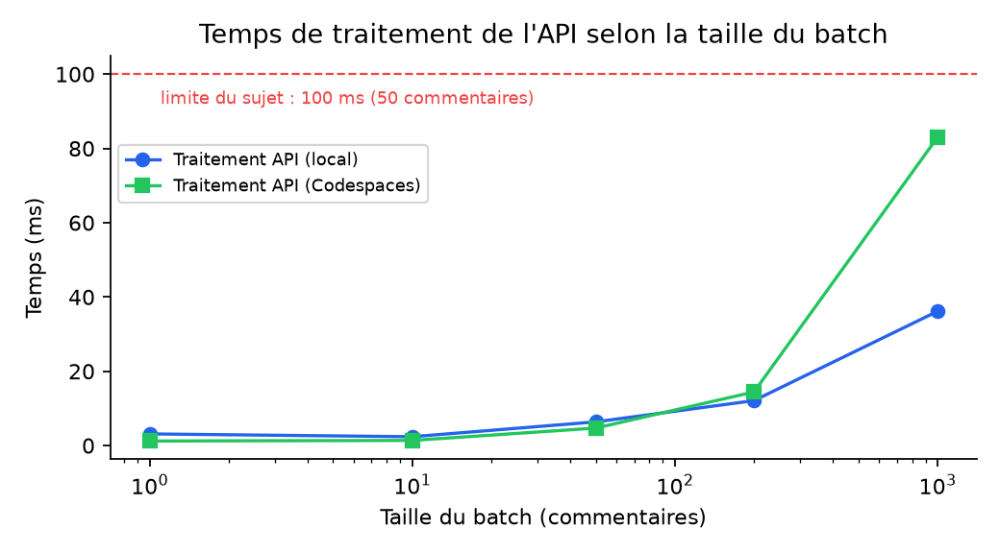
| Cas d'erreur | Code attendu | Local | Cloud | Validé |
|---|---|---|---|---|
| Batch vide | 422 | 422 | 422 | ✔ |
| Champ « comments » absent | 422 | 422 | 422 | ✔ |
| « comments » n'est pas une liste | 422 | 422 | 422 | ✔ |
| Nombres au lieu de texte | 422 | 422 | 422 | ✔ |
| Batch trop grand (1001) | 422 | 422 | 422 | ✔ |
| JSON invalide | 422 | 422 | 422 | ✔ |
| Route inconnue (/inconnu) | 404 | 404 | 404 | ✔ |
/health : 200 avec {"status":"ok","model_loaded":true} en local et en cloud. CORS : l'en-tête access-control-allow-origin: * est présent (requête de pré-vérification testée).
Méthode : un test réel sur une vraie vidéo YouTube (E0), et les autres en simulation : la vraie popup est ouverte dans Chrome avec de faux appels à l'API Chrome, et l'API Codespaces réelle. Les cas rares (réseau coupé, pas de commentaires, erreur serveur) sont simulés pour pouvoir les reproduire à coup sûr.
| # | Test | Méthode | Résultat observé | Validé |
|---|---|---|---|---|
| E0 | Analyse sur une vraie vidéo YouTube | Réel (Chrome + YouTube) | 45 commentaires analysés, résultats affichés, API en 2,25 ms | ✔ |
| E1 | manifest.json valide (MV3, permissions minimales) | Analyse du fichier | v3, permissions=storage | ✔ |
| E2 | Analyse complète (40 commentaires, API réelle) | Simulation | total=40, 40 éléments, 457 ms | ✔ |
| E2b | Somme des pourcentages ≈ 100 % | Simulation | 100.0 | ✔ |
| E3 | content.js : extraction, doublons, réponses, texte vide | Simulation | 3 textes uniques, réponse incluse, doublon et texte vide ignorés | ✔ |
| E4 | content.js : limite du nombre de commentaires | Simulation | 2 | ✔ |
| E5 | Vidéo sans commentaires | Simulation | Aucun commentaire trouvé. Descends jusqu'aux commentaires et réessaie. | ✔ |
| E6 | Profondeur Rapide / Standard / Large | Simulation | 0 / 3 / 8 | ✔ |
| E7-positive | Filtre « positive » | Simulation | 17 éléments | ✔ |
| E7-neutral | Filtre « neutral » | Simulation | 16 éléments | ✔ |
| E7-negative | Filtre « negative » | Simulation | 7 éléments | ✔ |
| E7-all | Filtre « all » | Simulation | 40 éléments | ✔ |
| E8 | Mode sombre activé et mémorisé | Simulation | dark=true, stocké=dark | ✔ |
| E8b | Thème sombre rechargé à la réouverture | Simulation | dark=true | ✔ |
| E9 | Bouton Copier | Simulation | 46 lignes, bouton="Copié ✓" | ✔ |
| E10 | Exporter CSV | Simulation | 41 lignes, fichier=sentiment_youtube.csv | ✔ |
| E11 | Mauvaise page (accueil YouTube) | Simulation | Ouvre une vidéo YouTube (youtube.com/watch) puis réessaie. | ✔ |
| E12 | Page non rechargée (pas de content script) | Simulation | Impossible de lire la page. Recharge l'onglet YouTube (F5) puis réessaie. | ✔ |
| E13 | Erreur réseau (API injoignable) | Simulation | Message « API injoignable » affiché, bouton Analyser réactivé | ✔ |
| E14 | Erreur serveur (code 500) | Simulation | Erreur de l'API (code 500). | ✔ |
| E15 | 1000 commentaires (performance) | Simulation | 1000 commentaires affichés en moins d'une seconde (API : 24 ms) | ✔ |
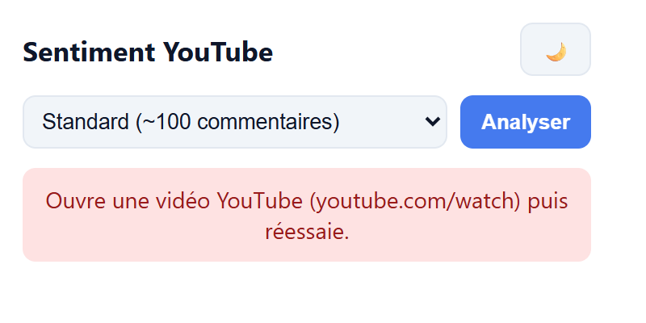
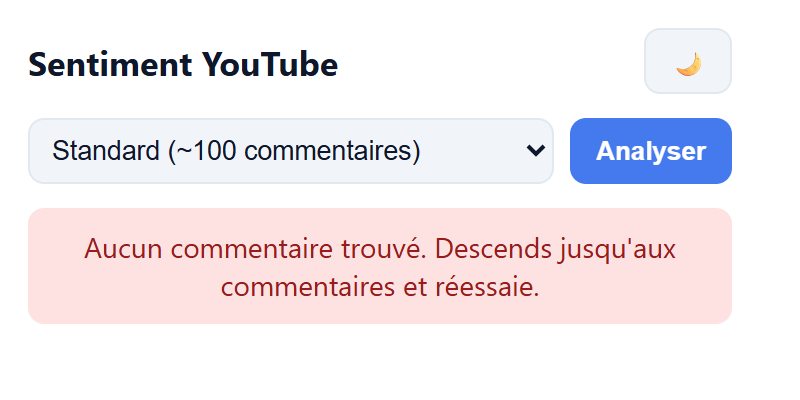
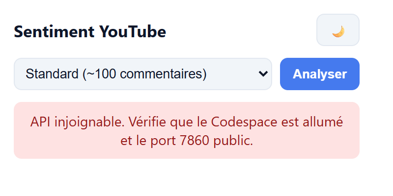
| Test | Résultat | Validé |
|---|---|---|
| Flux complet : extension → API cloud → résultats (vidéo réelle) | Résultats affichés (Figure 13) | ✔ |
| Flux avec l'API locale (uvicorn, port 8000) | Mêmes réponses que le cloud | ✔ |
| Cohérence local / cloud sur 200 commentaires | 200 / 200 sentiments identiques, écart de confiance maximal : 0.0 | ✔ |
| Problème | Cause | Solution |
|---|---|---|
| Le script download_data.py n'affichait rien ; requirements.txt et .gitignore étaient vides | Fichiers non enregistrés (0 octet) | Activer l'enregistrement automatique de VS Code et vérifier la taille des fichiers |
| Deux environnements virtuels (venv et .venv) | Création en double | Suppression de .venv |
| Page « Not Found » sur http://127.0.0.1:8000/ | Aucune route sur « / » | Utiliser /docs et /health |
| Éditeur Vim ouvert au git commit | Commit lancé sans l'option -m | Quitter avec :wq, puis toujours utiliser l'option -m avec un message |
| Hugging Face Spaces (Docker) devenu payant | Changement de politique de l'hébergeur | Sujet mis à jour : GitHub Codespaces, même Dockerfile, port via la variable PORT |
| Branche « master » alors que le sujet parle de « main » | Nom par défaut de Git | git branch -M main |
| Avertissements « LF will be replaced by CRLF » | Fin de ligne différente entre Windows et Linux | Sans danger, ignorés |
| Commentaires arabes classés « neutre » avec 0 % de confiance | Modèle entraîné sur l'anglais ; le nettoyage supprime les lettres non latines | Limite documentée ; amélioration future (modèle multilingue) |
| Meilleur C = 20, au bord de la grille de recherche | Grille limitée à 0,5–20 | Noté ; élargir la grille dans une version future |
| L'extension affiche « Recharge l'onglet » | Le content script n'existe pas dans une page ouverte avant l'installation | Faire F5 sur la page YouTube ; message d'erreur clair dans la popup |
| L'URL de l'API ne répond plus | Le Codespace s'éteint après environ 30 min | Rallumer le Codespace, relancer le conteneur, vérifier que le port est « Public » |
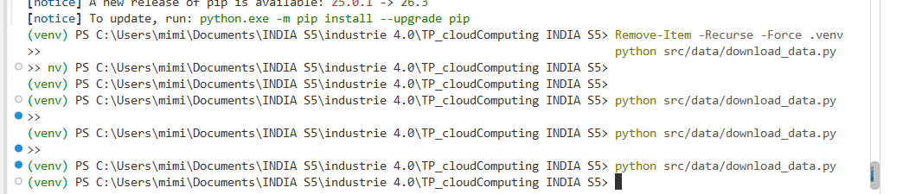
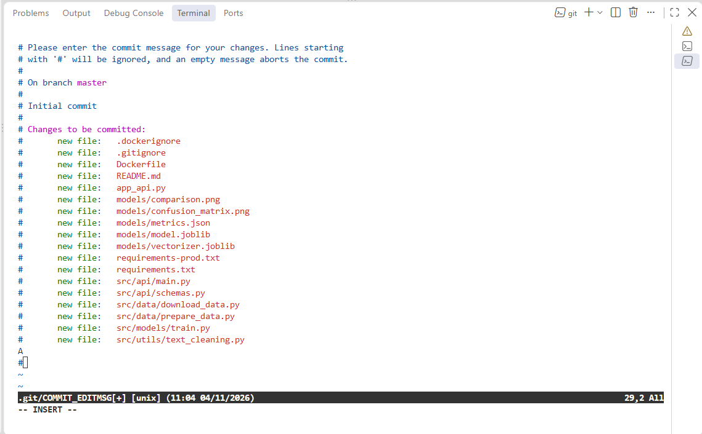
Le système complet fonctionne : un modèle à 88,1 % d'accuracy, une API conteneurisée accessible en HTTPS, et une extension Chrome qui affiche les résultats en moins d'une seconde. Les tests automatiques et manuels confirment que tous les critères du sujet sont atteints. La principale limite est le support des langues autres que l'anglais.
Livrables : dépôt GitHub (https://github.com/HibaBenzahra/youtube-sentiment-mlops), fichiers .joblib et métriques dans models/, API déployée (https://organic-space-carnival-x594x6jg76vpf6p5p-7860.app.github.dev), extension dans chrome-extension/, tests dans tests/.